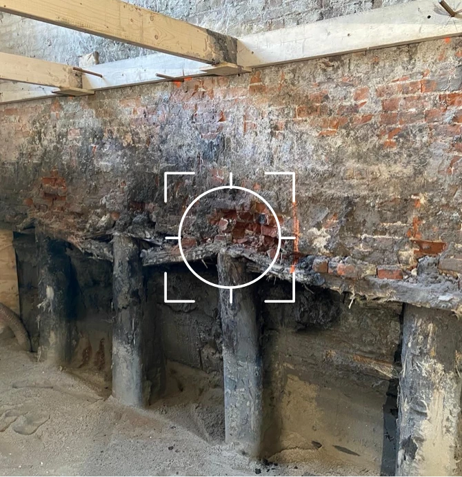
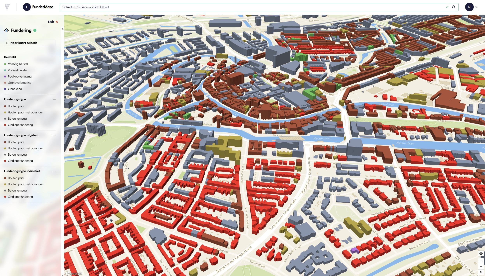
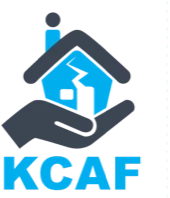
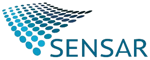

Interactieve Mapviewer
Open de kaart, zoek op postcode of adres en zie per pand het funderingsrisico, het funderingstype, onderzoekshistorie en herstelmeldingen. Filter op wijk of gemeente en exporteer een selectie voor verder onderzoek.
Eén databron voor verzekeraars, banken, gemeenten en taxateurs — gevoed door BAG-data, satellietmetingen en KCAF-onderzoek.

Risicobeeld op pandniveau, gevoed door BAG, 3DBAG en bodemkundige data.
Hét nationale register voor uitgevoerd funderingsherstel — transparant voor taxatie en transactie.
Satellietmetingen, QuickScans en herstelmeldingen worden continu verwerkt in het risicomodel.
Vier manieren om funderingsdata in jouw werk te krijgen — kies wat past bij jouw proces. Eén onderliggende databron, vier ingangen.
Open de kaart, zoek op postcode of adres en zie per pand het funderingsrisico, het funderingstype, onderzoekshistorie en herstelmeldingen. Filter op wijk of gemeente en exporteer een selectie voor verder onderzoek.
Eén werkomgeving voor onderzoeken, herstelmeldingen en rapportages. Werk samen met team en partners, koppel data uit eigen onderzoek en lever bevindingen terug aan de landelijke database.
Plug FunderMaps direct in jouw onderwriting-flow, taxatieproces of gemeentelijk dashboard. JSON over HTTPS, BAG-ID als sleutel, met risicoscore, funderingstype en historie per pand.
Het onderliggende model combineert kadastrale data, 3D-bouwgeometrie, bodemkundige eigenschappen en satellietmetingen om gaten in het onderzoeksbeeld op te vullen — zodat ook panden zonder fysiek onderzoek een onderbouwde score krijgen.
Een blik op de kaartweergave: per pand het funderingsrisico, het funderingstype, onderzoekshistorie en herstelmeldingen. Filter op wijk, gemeente of risicoklasse en duik door tot de panddetails.

Deze gebruikers gingen u voor:

Een stichting met als doelstelling het verzamelen, ontwikkelen en ontsluiten van kennis rond de aanpak en preventie van funderingsproblemen.
Meer info
Gegevens over de zakking van de bodem en panden vormen een aanvulling bij het beoordelen van de actuele staat van een potentieel funderingsrisico. Deze gegevens kunnen worden geleverd door Sensar en verwerkt in het FunderMaps-platform.
Meer infoGegevens over de zakking van de bodem en panden vormen een aanvulling bij het beoordelen van de actuele staat van een potentieel funderingsrisico. Deze gegevens kunnen worden geleverd door SkyGeo en verwerkt in het FunderMaps-platform.
Meer info